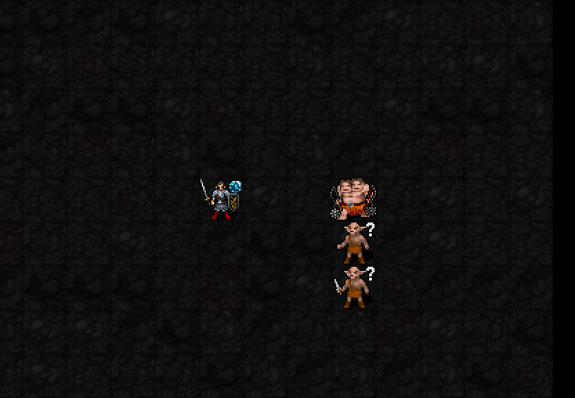
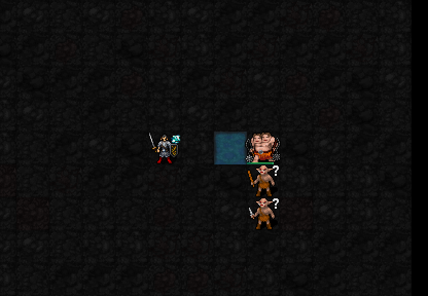

최대5칸으로 파도를 보내 피해를 주고 적을1칸 밀어냅니다. 물을 만나면 그 지점부터 폭이3줄로 넓어집니다.
해금: 신앙75 · 최소 기도술 제한 없음
비용: MP3·신앙3·행동1턴
재사용: 사용 시작부터4턴, 시전 완료 후3턴


실제 엔진 캡처: 시전 전 → 한 칸씩 전진하는 파도5프레임 → 피해·밀치기 결과. 두 번째 장면의 두 칸 앞 물은 실제 일반 근접공격으로 생성했습니다. 첫 칸은 좁은 파도, 두 번째 물 칸부터 양옆으로 넓어져 총3칸 폭으로 전진합니다. 피해·밀치기 판정은 즉시 처리되며, 각 연출 프레임이 별도의 공격 턴은 아닙니다.
파도 도트를20×24에서24×28픽셀로 조금 확대했습니다. 공격 범위와 피해는 동일합니다.
| 항목 | 적용 |
|---|---|
| 피해 | 2d(7+⌊I/3⌋). 기도술I12:2d11,2~22·평균12. 적 AC 적용, 별도 명중 굴림 없음 |
| 밀치기 | 진행 방향1칸. 벽·다른 개체·함정·이동 불가 등으로 막히면 이동하지 않음 |
| 방향·거리 | 선택 위치 방향의8방향 중 하나, 최대5칸. 벽·시야 차단에서 중심 경로 중단 |
| 물 연계 | 1성 웅덩이 또는 자연 물을 지나면 해당 지점부터 양옆1줄 추가. 물을 소모하지 않음 |
| 보호 | 이 권능은 보이는 적대 몹만 피해 대상으로 선택 |
| 1성 확정 | 실제 얕은 물 생성 유지. 스우 신도는 자연/생성 얕은 물의 이동 지연·근접 헛손질 면제 |
| 조건 | 중앙 적 피해 | 옆줄 적 피해 | 밀치기 |
|---|---|---|---|
| 마른 바닥 | 5 | 0 | 중앙1칸·옆줄유지 |
| 물 통과 | 10 | 9 | 중앙1칸·옆줄1칸 |
범위 밖 몹은 두 경우 모두 피해·이동 없음. 위 피해는 이번 한 번의 난수·AC 적용 결과이며 평균 피해가 아닙니다. 비용·재사용·물 확장·밀치기·캡처 상태/RNG 보존 및22신 회귀·저장 복원 검사 통과. 3성 확정. 다음은5성 검토입니다.